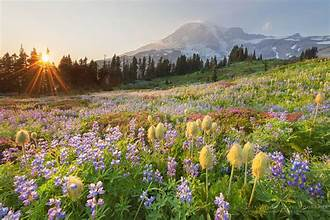
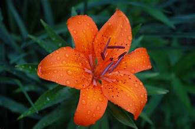

Welcome to The Pacific Northwest Flower Season!
Explore the enchanting world of flowers
Explore a place filled with vibrant colors and fragrant blooms. Discover the beauty of Mt. Rainier in one of its most charming seasons!
Discover the various wildflowers the Pacific Northwest has to offer here.
White Trillium: The White Trillium is a three-petaled flower commonly found in woodlands, blooming in early spring.
Rhododendron: Rhododendrons are known for their large clusters of bright pink or purple flowers, thriving in acidic soils.

Tiger Lily: Tiger Lilies are easily recognizable by their bright orange flowers with black spots, blooming in mid to late summer.